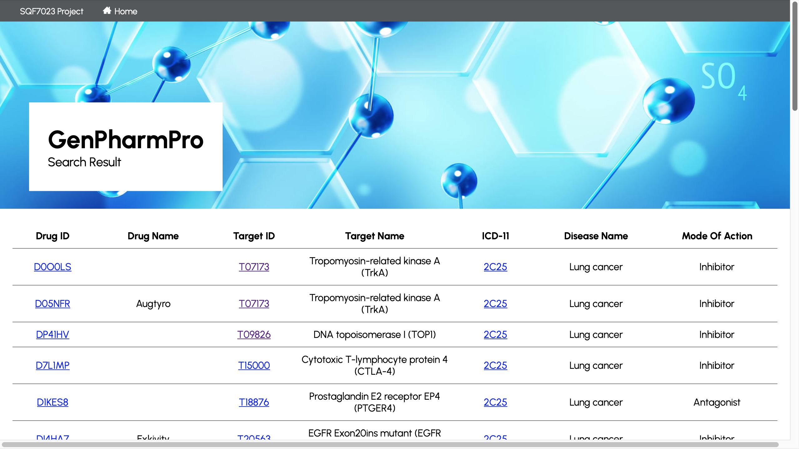
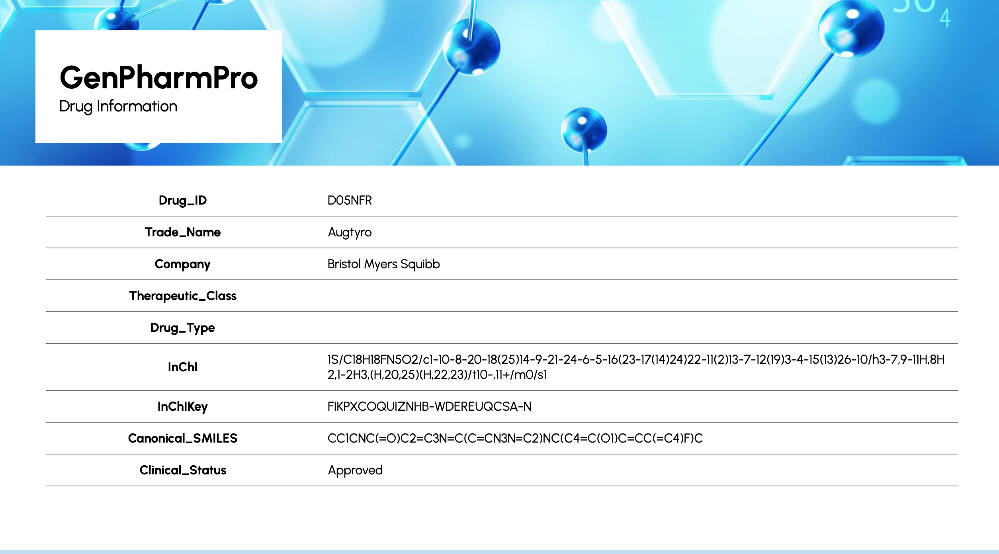
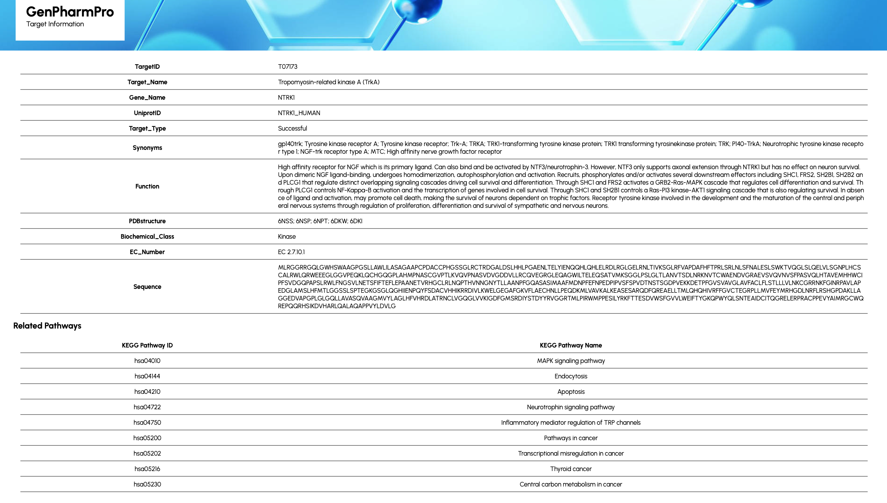

GenPharmPro: A Relational Database for Drug-Disease-Target Interactions
Overview
GenPharmPro is a relational database system developed to facilitate the exploration of complex interactions among drugs, diseases, and biological targets. Designed as part of a postgraduate academic project in bioinformatics, this platform enables researchers, healthcare professionals, and students to query, visualize, and analyze pharmacological relationships, thereby supporting drug discovery, disease understanding, and target identification.
The system addresses the growing need for integrated data management in pharmacogenomics and systems biology by compiling structured datasets and presenting them through a user-friendly web interface.
Technical Details
GenPharmPro is built upon a structured relational database architecture that consists of six primary tables:
Each table is normalized to reduce redundancy and support efficient querying. The system supports SQL-based operations and includes views for simplified data exploration.
Technologies Used
Key Features
- Advanced Query System: Enables users to search for specific drug-disease-target combinations.
- Visual Representation: Pathway and interaction maps provide intuitive understanding of complex relationships.
- Expandable Architecture: Designed for easy integration with external APIs and omics datasets in future developments.
Impact
GenPharmPro serves as a foundational tool for promoting translational bioinformatics and enhancing pharmaceutical research. By integrating drug, disease, and target data into a centralized, relational framework, the system could:
- Bridge Knowledge Gaps: Facilitates cross-domain insights between pharmacology, molecular biology, and clinical research.
- Support Precision Medicine: Assists in identifying potential drug repurposing opportunities and understanding molecular mechanisms of disease.
- Enhance Education: Acts as a valuable educational resource for students learning about database systems, drug-target interactions, and bioinformatics tools.
- Promote Reproducible Research: Encourages structured data use and reproducible methodologies by providing a clean, relational format for data access and queries.
The platform not only demonstrates the practical application of internet programming and relational database design in the bioinformatics domain but could also lays the groundwork for future enhancements such as multi-omics integration, machine learning analysis, and public-facing data portals.
Query interface for GenPharmPro.
Results interface for GenPharmPro.
Drug information page.
Target information page with KEGG pathway(s).
Group member
Cao Yu
← Back to Projects